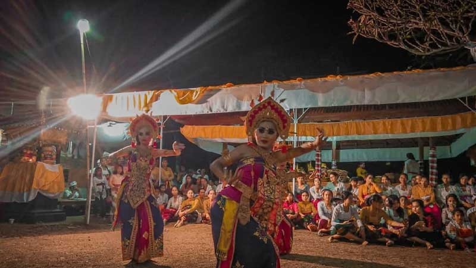

Tari Cilinaya
Di antara maestro seni tari di Bali, tersebutlah I Wayan Dibia yang memiliki koleksi tari yang senantiasa lestari dan diminati. Tari Manuk Rawa adalah contoh karya hasil garapannya bersama I Wayan Beratha di tahun 1981.
Sebelumnya di tahun 1979, ia juga menciptakan tari bertema kepahlawanan yang dikembangkan dari Tari Baris, Tari Wirayuda namanya. Adapun di artikel ini dibahas Tari Cilinaya, varian tari kreasi Bali yang dikreasikan I Wayan Dibia di tahun 1986.
Cili merujuk pada nama ornamen khas yang menghiasi busana para penarinya. Ornamen ini berupa sehelai kain panjang berujung lancip dan bermotif warna-warni. Cili umumnya bisa ditemukan pada lamak Bali yang digunakan saat upacara adat.
Selain melambangkan keceriaan dan kegembiraan, Cili juga merupakan lambang kecantikan. Dalam prakteknya, tari yang diciptakan untuk Sekaa Gong Putra Kencana Singapadu di Gianyar ini memang melukiskan keceriaan sekelompok wanita cantik.
Mereka menari lemah gemulai dan bersukaria sambil memamerkan kecantikannya. Tanpa delik mata yang tajam. Mereka hanya menari riang gembira penuh dengan senyuman. Nuansa keanggunan demikian terasa melalui gerakan yang disajikan